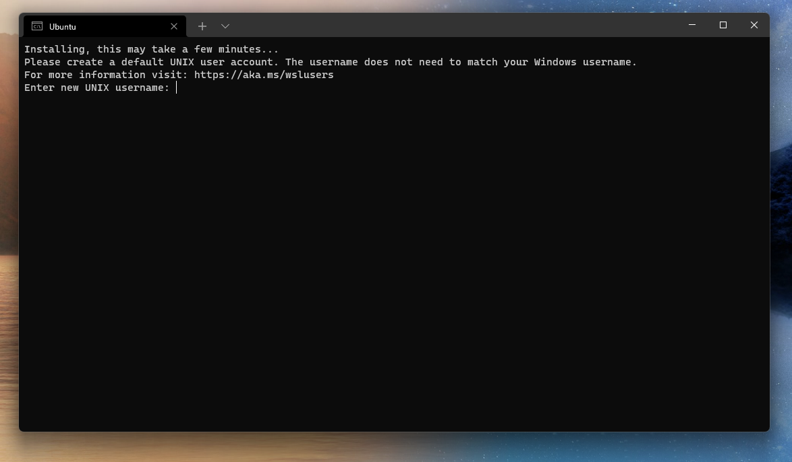
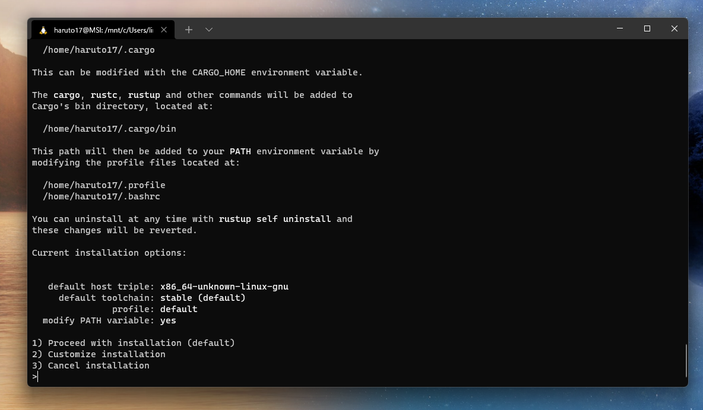
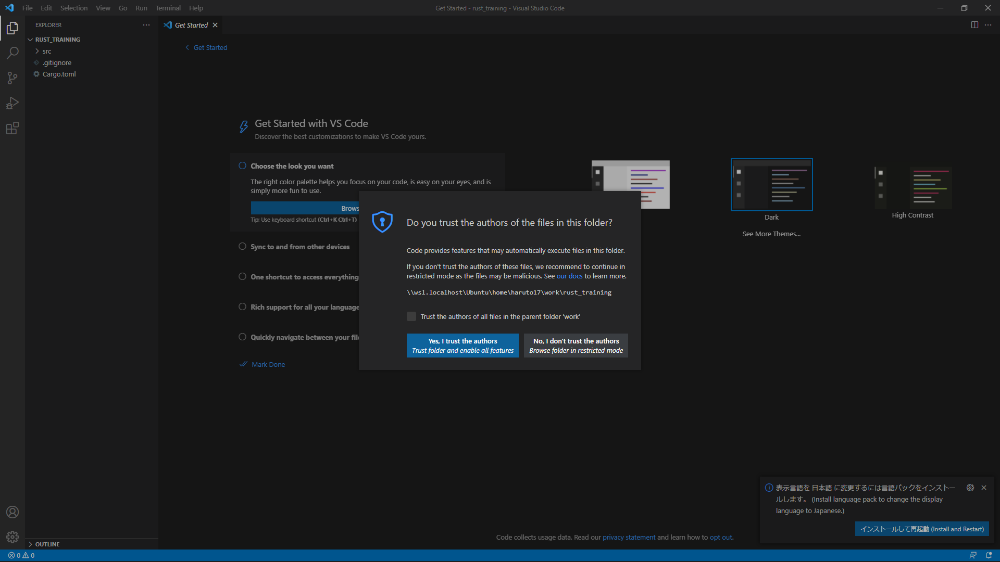
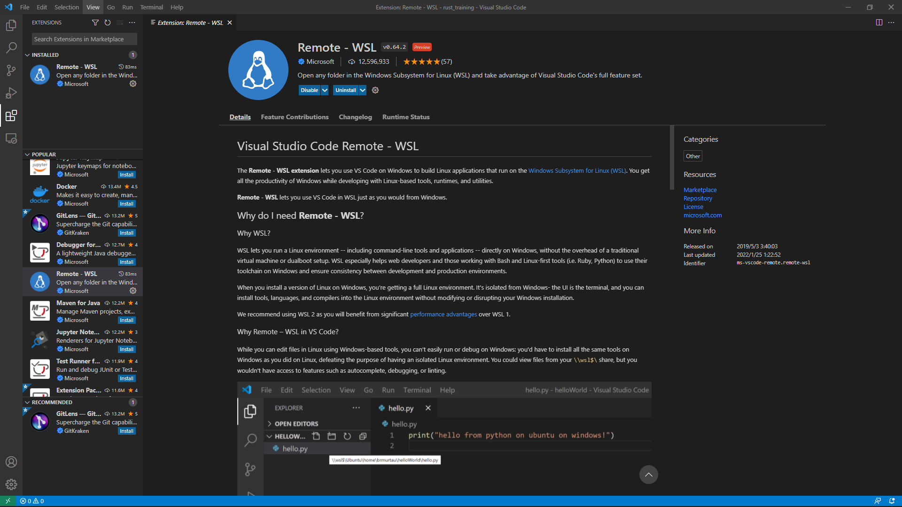
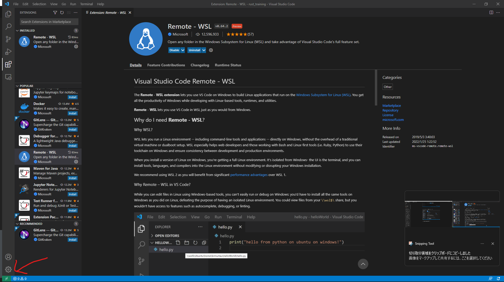
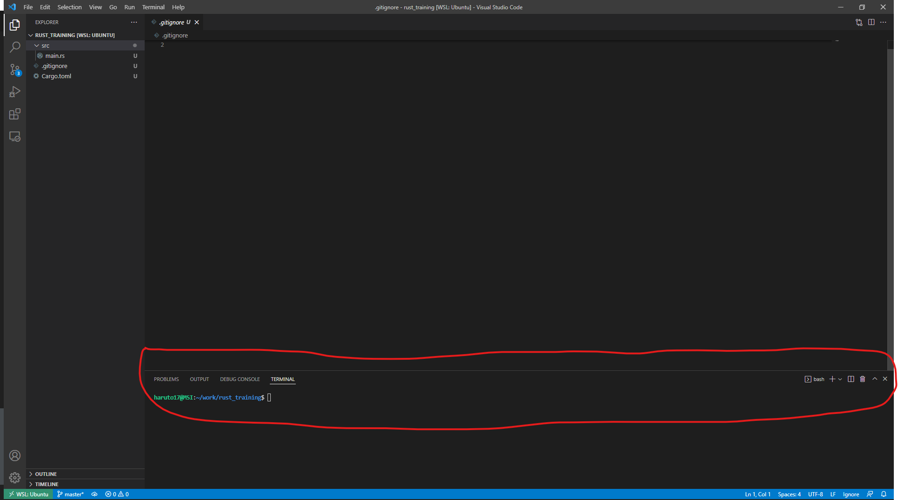

Rust講習会2022
環境構築
この章では、Rustの学習に必要な環境構築について紹介しています。
ここでは、Windowsの使用を想定したインストール方法を解説しています。
WSLのインストール
1.コマンドプロンプトを管理者モードで起動した後、以下のコマンドを実行する
wsl --install
2.Windowsを再起動する
3.再起動後、Ubuntuが起動しているはずなので、UNIXアカウントを作成する

必要なのはユーザー名とパスワードだけだよ
4.以下のコマンドを実行する
sudo apt update
sudo apt dist-upgrade
sudo apt autoremove
5.以下のコマンドを実行し、build-essentialをインストールする
sudo apt-get update
sudo apt-get install build-essential
VScodeのインストール
1.以下のサイトからVScodeのインストーラーを入手する
https://code.visualstudio.com/download
インストール中にでてくる「PATHへの追加」のチェックは必ずしてください
2.VScodeを起動せずに、インストーラーを終了する
3.Windowsを再起動する
Rustのインストール
1.Ubuntu上で以下のコマンドを実行する
curl --proto '=https' --tlsv1.2 -sSf https://sh.rustup.rs | sh
2.以下のようにしてインストール方法を聞かれるので、1を選択する
(カスタマイズしてインストールしたい場合は2を選択する)

3.以下のコマンドを実行する(パスを通す)
source $HOME/.cargo/env
4.以下のコマンドでRustのバージョンを確認する
rustc --version
cargo --version
作業用ディレクトリの作成
1.以下のコマンドを実行して、作業用ディレクトリを作成する
mkdir $HOME/work
2.以下のコマンドを実行して、作業用ディレクトリに移動する
cd &HOME/work
3.以下のコマンドでRustプロジェクトを作成する
cargo new --bin rust_training
プロジェクト名は適宜変更してください
4.以下のコマンドで、作成したプロジェクトディレクトリに移動する
cd $HOME/work/rust_training
VScodeの設定
1.プロジェクトのディレクトリ直下にいる状態で、以下のコマンドを実行する
code .
VScodeが起動するはずです。
起動した際、「Do you trust the authors of the files in this folder?」という警告が出るかもしれませんが、
「Yes」を選択してください。

2.拡張機能「Remote - WSL」をインストールする

3.左下の緑色の矢印をクリックする

4.「Reopen Folder in WSL」を選択する
5.Ctrl + @でターミナルを起動し、Ubuntu上になっていることを確認する

6.拡張機能「Rust」をインストールする

インストールしmain.rsを開くと、右下に「Some Rust Components not installed. install?」
とポップアップが表示されるので「Yes」を選択してください。
以上でRustの学習に必要な環境構築は終了です。お疲れさまでした。